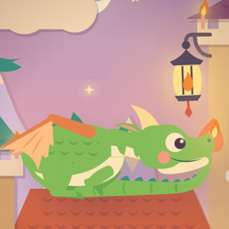

Shadowbook
You read. The story comes alive.
Shadowbook is a bedtime book with a paper theatre inside. You read the story aloud and cut-paper puppets act it out, a line at a time. Your child has a part in every story (a tap, a shout, a breath, a whisper), and at the end they blow out the lamp. You can also let a narrator read, or play a story in the voice of someone in the family who recorded it far away.
Help
The puppets don't move when I read
Shadowbook listens for the words of the story, on your iPhone. Check that it may use the microphone and speech recognition: iOS Settings › Apps › Shadowbook. In a noisy room, or if you change a lot of words, a tap on the line always moves the story on. You can also switch listening off in Shadowbook's Settings (Follow my voice) and just tap.
Does it work without internet?
Yes. Reading, listening and the theatre all work in aeroplane mode. The first time, iOS may need to download its on-device speech model for your language.
How does a family voice work?
The person reading needs Shadowbook on their own iPhone. They open Voices, tap Record a reading here and read a story aloud once. Then they tap ··· beside the reading and tap Send to family (Messages, Mail, AirDrop, any way they like). Open the file on your iPhone and it joins your Voices. The reading goes straight from their iPhone to yours; it never passes through us.
The story ends with "Blow out the lamp"
That is the end on purpose: a breath on the phone, or a touch, puts the lamp out. If everyone falls asleep first, the lamp goes out by itself after a little while. There is no next-story button.
What is the grown-up question?
Before purchases, settings, recording and any link that leaves the app, Shadowbook asks a quick multiplication question, so these stay with the grown-ups.
The free stories and the subscription
Three complete stories are free for good. A Shadowbook subscription opens every story in the library and family voices on every story: yearly with a 7-day free trial, or monthly with no trial. Two days before a free trial ends, Shadowbook sends one notification to say so (if notifications are allowed). Cancel any time in iOS Settings › your name › Subscriptions, at least 24 hours before the period ends.
I subscribed but the stories are still locked
Open Shadowbook › Settings › Restore purchases, signed in to the same Apple Account. With Family Sharing, the subscription works for everyone in the family group. Refunds are handled by Apple at reportaproblem.apple.com.
Contact
Email alexandremanukyan1@gmail.com. I read every message.